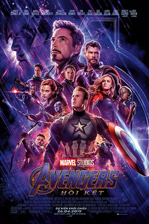
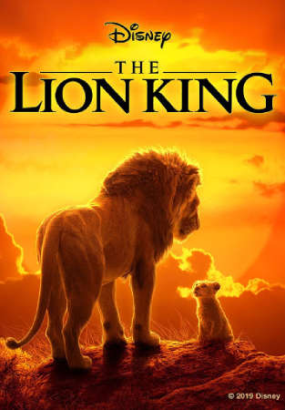
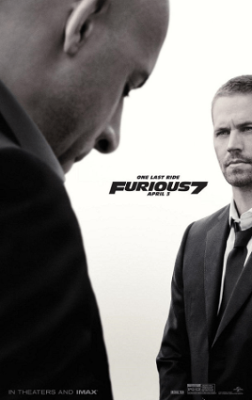
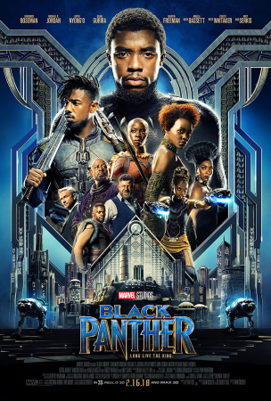
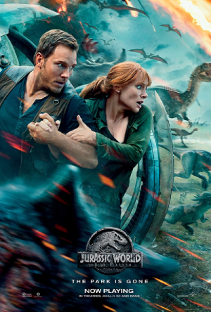

|  |  |  |  |  |
|---|---|---|---|---|
| Avengers Endgame | The Lion King | Fast & Furious 7 | Black Panther | Jurassic World: Fallen Kingdom |
| Đạo diễn: | Anthony Russo, Joe Russo |
| Diễn viên: | Robert Downey Jr., Chris Hemsworth, Chris Evans, Scarlett Johansson, Mark Ruffalo, Jeremy Renner |
| Quốc gia: | Mỹ |
| Doanh số: | $2,797,501,328 |
| Tóm tắt: | Là siêu phẩm được trông đợi nhất 2019, Avengers: Endgame đã khiến toàn cầu xôn xao khi tung trailer vào 07.12.2018. Chỉ trong vòng 24 giờ, trailer nhận được gần 300 triệu lượt xem và trở thành trailer có lượt xem cao nhất mọi thời đại. |
| Đạo diễn: | Jon Favreau |
| Diễn viên: | Simba, Nala, Mufasa, Sarabi, Scar, Rafiki, Zazu, Timon, Pumbaa, Shenzi, Banzai, Ed. |
| Quốc gia: | Hoa Kỳ |
| Doanh thu: | $1,670,727,580 |
| Tóm Tắt: | Vua sư tử là phim hoạt hình thứ 32 của hãng hoạt hình Walt Disney, công chiếu vào năm 1994. Bộ phim đã nhận được rất nhiều lời khen ngợi về cốt truyện, nội dung giàu tính triết lý và âm nhạc, nhận được 92% đánh giá tích cực trên trang web phê bình điện ảnh Rotten Tomatoes |
| Đạo diễn: | James Wan |
| Diễn viên: | Vin Diesel, Paul Walker, Dwayne Johnson, Michelle Rodriguez, Jordana Brewster, Tyrese Gibson, Chris Bridges, Lucas Black, Jason Statham |
| Quốc gia: | Mỹ |
| Doanh thu: | $1,515,341,399 |
| Tóm Tắt: | Fast & Furious 7 là một phim hành động năm 2015 của Mỹ. Đây là phần tiếp theo của bộ phim năm 2013 Fast & Furious 6 và cũng là bộ phim thứ bảy trong loạt phim Fast & Furious |
| Đạo diễn: | Ryan Coogler |
| Diễn viên: | Chadwick Boseman Michael B. Jordan Lupita Nyong'o Danai Gurira Martin Freeman Daniel Kaluuya Letitia Wright Winston Duke Angela Bassett Forest Whitaker Andy Serkis |
| Quốc gia: | Hoa Kỳ |
| Doanh thu: | $1,347,597,973 |
| Tóm Tắt: | Chiến binh Báo Đen là một phim của điện ảnh Hoa Kỳ dựa trên nhân vật siêu anh hùng cùng tên của hãng Marvel Comics, sản xuất bởi Marvel Studios và phân phối bởi Walt Disney Studios Motion Pictures. |
| Đạo diễn: | J. A. Bayona |
| Diễn viên: | Chris Pratt Bryce Dallas Howard Rafe Spall Justice Smith Daniella Pineda James Cromwell Toby Jones Ted Levine B. D. Wong Isabella Sermon Isabella Sermon |
| Quốc gia: | Hoa Kỳ |
| Doanh thu: | $1,310,466,296 |
| Tóm Tắt: | là một bộ phim phiêu lưu khoa học viễn tưởng Mỹ năm 2018 và là phần tiếp nối của bộ phim Thế giới khủng long. Bộ phim được đạo diễn bởi J. A. Bayona, đây là phần thứ năm của loạt phim Jurassic Park, cũng như phần thứ hai của bộ ba Jurassic World đã được lên kế hoạch. |